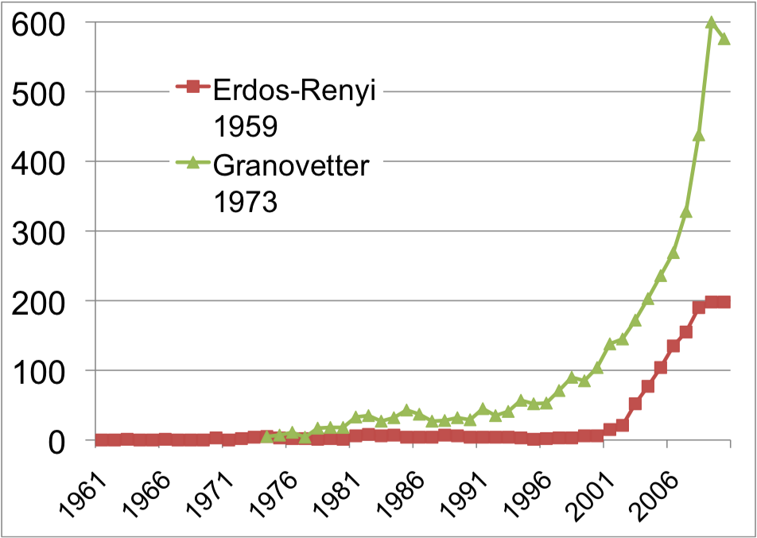
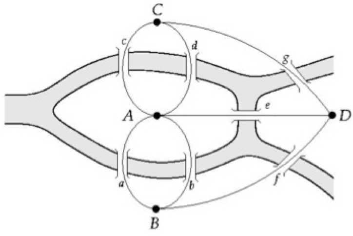
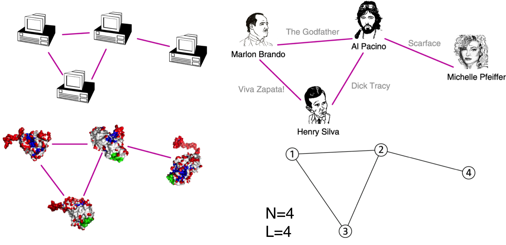
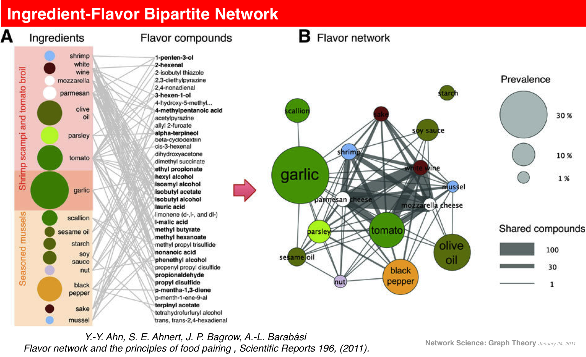
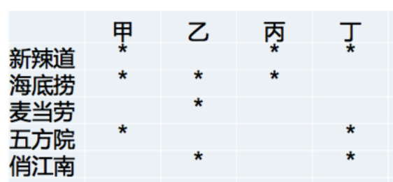
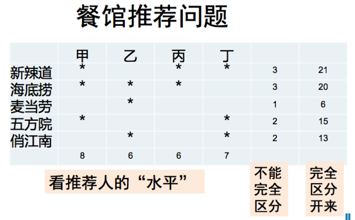
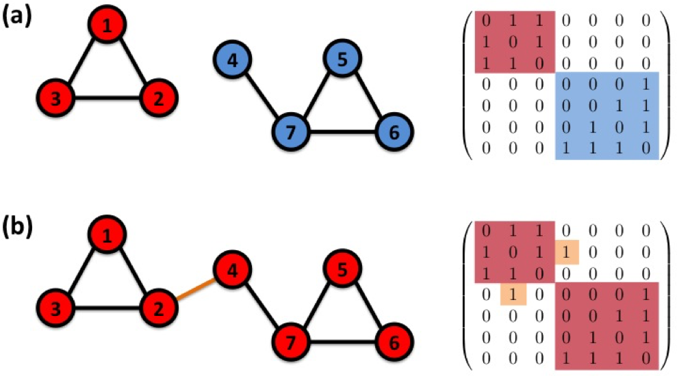

第十章 网络科学简介¶
Network Science, a textbook for network science, is freely available under the Creative Commons license. http://networksciencebook.com/

Introduction
Graph Theory
Random Networks
The Scale-Free Property
The Barabási-Albert Model
Evolving Networks
Degree Correlations
Network Robustness
Communities
Spreading Phenomena Preface
FROM SADDAM HUSSEIN TO NETWORK THEORY¶
SADDAM HUSSEIN: the fifth President of Iraq, serving in this capacity from 16 July 1979 until 9 April 2003. Invasion that started in March 19, 2003. Many of the regime’s high ranking officials, including Saddam Hussein, avoided capture. Hussein was last spotted kissing a baby in Baghdad in April 2003, and then his trace went cold.
Designed a deck of cards, each card engraved with the images of the 55 most wanted.
It worked: by May 1, 2003, 15 men on the cards were captured, and by the end of the month another 12 were under custody.
Yet, the ace of spades, i.e. Hussein himself, remained at large.
{kind=link}
It demonstrates the remarkable stability of these networks.
The capture of Hussein was not based on fresh intelligence, but rather on his pre-invasion social links, unearthed from old photos stacked in his family album.
It shows that the choice of network we focus on makes a huge difference: the hierarchical tree captured the official organization of the Iraqi government, was of no use when it came to Saddam Hussein’s whereabouts.
How about Osama bin Laden?¶
the founder of al-Qaeda, the organization that claimed responsibility for the September 11 attacks on the United States.
2005年9月1日，中情局内部关于猎杀本·拉登任务的布告栏上贴出了如下信息：由于关押囚犯的强化刑讯已经没有任何意义，“我们只能继续跟踪科威特”。
中情局自此开始了对科威特长达数年的跟踪，最终成功窃听到了他本·拉登之间的移动电话，从确定了他的位置并顺藤摸瓜找到了本·拉登在巴基斯坦的豪宅，再经过9个月的证实、部署，于2011年5月1日由海豹突击队发动突袭、击毙本·拉登。
{kind=link}
VULNERABILITY¶
DUE TO INTERCONNECTIVITY
The 2003 blackout is a typical example of a cascading failure.
1997, when the International Monetary Fund pressured the central banks of several Pacific nations to limit their credit.
2009-2011 financial melt-down
An important theme of this class:
we must understand how network structure affects the robustness of a complex system.
develop quantitative tools to assess the interplay between network structure and the dynamical processes on the networks, and their impact on failures.
We will learn that failures reality failures follow reproducible laws, that can be quantified and even predicted using the tools of network science.
NETWORKS AT THE HEART OF
COMPLEX SYSTEMS¶
Complex
[adj., v. kuh m-pleks, kom-pleks; n. kom-pleks] –adjective
composed of many interconnected parts; compound; composite: a complex highway system.
characterized by a very complicated or involved arrangement of parts, units, etc.: complex machinery.
so complicated or intricate as to be hard to understand or deal with: a complex problem. Source: Dictionary.com
Complexity¶
a scientific theory which asserts that some systems display behavioral phenomena that are completely inexplicable by any conventional analysis of the systems’ constituent parts. These phenomena, commonly referred to as emergent behaviour, seem to occur in many complex systems involving living organisms, such as a stock market or the human brain. Source: John L. Casti, Encyclopædia Britannica
COMPLEX SYSTEMS¶
society
brain
market
cell
Stephen Hawking: I think the next century will be the century of complexity.
Behind each complex system there is a network, that defines the interactions between the component.

Social graph
Organization
Brain
finantial network
business
Internet
Genes
Behind each system studied in complexity there is an intricate wiring diagram, or a network, that defines the interactions between the component.
We will never understand complex system unless we map out and understand the networks behind them.
THE HISTORY OF NETWORK ANALYSIS¶
Graph theory: 1735, Euler
Social Network Research: 1930s, Moreno
Communication networks/internet: 1960s
Ecological Networks: May, 1979.
While the study of networks has a long history from graph theory to sociology, the modern chapter of network science emerged only during the first decade of the 21st century, following the publication of two seminal papers in 1998 and 1999.
The explosive interest in network science is well documented by the citation pattern of two classic network papers, the 1959 paper by Paul Erdos and Alfréd Rényi that marks the beginning of the study of random networks in graph theory [4] and the 1973 paper by Mark Granovetter, the most cited social network paper [5].
Both papers were hardly or only moderately cited before 2000. The explosive growth of citations to these papers in the 21st century documents the emergence of network science, drawing a new, interdisciplinary audience to these classic publications.
{kind=link}
THE EMERGENCE OF NETWORK SCIENCE
Movie Actor Network, 1998;
World Wide Web, 1999.
C elegans neural wiring diagram 1990
Citation Network, 1998
Metabolic Network, 2000;
PPI network, 2001
The universality of network characteristics:
The architecture of networks emerging in various domains of science, nature, and technology are more similar to each other than one would have expected.
THE CHARACTERISTICS OF NETWORK SCIENCE
Interdisciplinary
Empirical
Quantitative and Mathematical
Computational
THE IMPACT OF NETWORK SCIENCE
Google Market Cap(2010 Jan 1): $189 billion
Cisco Systems networking gear Market cap (Jan 1, 2919): $112 billion
Facebook market cap: $50 billion
Health: From drug design to metabolic engineering.¶
The human genome project, completed in 2001, offered the first comprehensive list of all human genes.
Yet, to fully understand how our cells function, and the origin of disease,
we need accurate maps that tell us how these genes and other cellular components interact with each other.
Security: Fighting Terrorism.¶
Terrorism is one of the maladies of the 21st century, absorbing significant resources to combat it worldwide.
Network thinking is increasingly present in the arsenal of various law enforcement agencies in charge of limiting terrorist activities.
To disrupt the financial network of terrorist organizations
to map terrorist networks
to uncover the role of their members and their capabilities.
Using social networks to capture Saddam Hussein
Capturing of the individuals behind the March 11, 2004 Madrid train bombings through the examination of the mobile call network.
Epidemics: From forecasting to halting deadly viruses.¶
While the H1N1 pandemic was not as devastating as it was feared at the beginning of the outbreak in 2009, it gained a special role in the history of epidemics: it was the first pandemic whose course and time evolution was accurately predicted months before the pandemic reached its peak.
Before 2000 epidemic modeling was dominated by compartment models, assuming that everyone can infect everyone else one word the same socio-physical compartment.
The emergence of a network-based framework has fundamentally changed this, offering a new level of predictability in epidemic phenomena.
The first major mobile epidemic outbreak¶
In January 2010 network science tools have predicted the conditions necessary for the emergence of viruses spreading through mobile phones.
in the fall of 2010 in China, infecting over 300,000 phones each day, closely followed the predicted scenario.
Brain Research: Mapping neural network.¶
The human brain, consisting of hundreds of billions of interlinked neurons, is one of the least understood networks from the perspective of network science.
The reason is simple:
we lack maps telling us which neurons link to each other.
The only fully mapped neural map available for research is that of the C.Elegans worm, with only 300 neurons.
Driven by the potential impact of such maps, in 2010 the National Institutes of Health has initiated the Connectome project, aimed at developing the technologies that could provide an accurate neuron-level map of mammalian brains.
The Bridges of Konigsberg¶

Can one walk across the seven bridges and never cross the same bridge twice and get back to the starting place?
{kind=link}
Euler’s theorem (1735):¶
If a graph has more than two nodes of odd degree, there is no path.
If a graph is connected and has no odd degree nodes, it has at least one path.
COMPONENTS OF A COMPLEX SYSTEM
Networks and graphs
components: nodes, vertices N
interactions: links, edges L
system: network, graph G(N,L)
network often refers to real systems
www,
social network
metabolic network.
Language: (Network, node, link)
graph: mathematical representation of a network
web graph,
social graph (a Facebook term)
Language: (Graph, vertex, edge) G(N, L)
{kind=link}
CHOOSING A PROPER REPRESENTATION¶
The choice of the proper network representation determines our ability to use network theory successfully.
In some cases there is a unique, unambiguous representation. In other cases, the representation is by no means unique. For example, the way we assign the links between a group of individuals will determine the nature of the question we can study.
If you connect individuals that work with each other, you will explore the professional network. http://www.theyrule.net
If you connect those that have a romantic and sexual relationship, you will be exploring the sexual networks.
If you connect individuals based on their first name (all Peters connected to each other), you will be exploring what? It is a network, nevertheless.
UNDIRECTED VS. DIRECTED NETWORKS¶
Undirected¶
Links: undirected
co-authorship
actor network
protein interactions
%matplotlib inline
import matplotlib.pyplot as plt
import networkx as nx
Gu = nx.Graph()
for i, j in [(1, 2), (1, 4), (4, 2), (4, 3)]:
Gu.add_edge(i,j)
nx.draw(Gu, with_labels = True)
{kind=link}
Degree, Average Degree and Degree Distribution¶
nx.draw(Gu, with_labels = True)
Undirected network:¶
Node degree: the number of links connected to the node.
\(k_1 = k_2 = 2, k_3 = 3, k_4 = 1\)
nx.draw(Gd, with_labels = True, pos=nx.circular_layout(Gd))
Directed network¶
In directed networks we can define an in-degree and out-degree. The (total) degree is the sum of in-and out-degree.
\(k_3^{in} = 2, k_3^{out} = 1, k_3 = 3\)
Source: a node with \(k^{in}= 0\); Sink: a node with \(k^{out}= 0\).
For a sample of N values: \(x_1, x_2, ..., x_N\):
Average(mean):
\(<x> = \frac{x_1 +x_2 + ...+x_N}{N} = \frac{1}{N}\sum_{i = 1}^{N} x_i\)
For a sample of N values: \(x_1, x_2, ..., x_N\):
The nth moment:
\(<x^n> = \frac{x_1^n +x_2^n + ...+x_N^n}{N} = \frac{1}{N}\sum_{i = 1}^{N} x_i^n\)
For a sample of N values: \(x_1, x_2, ..., x_N\):
Standard deviation:
\(\sigma_x = \sqrt{\frac{1}{N}\sum_{i = 1}^{N} (x_i - <x>)^2}\)
import numpy as np
x = [1, 1, 1, 2, 2, 3]
np.mean(x), np.sum(x), np.std(x)
(1.6666666666666667, 10, 0.7453559924999299)
For a sample of N values: \(x_1, x_2, ..., x_N\):
Distribution of x:
\(p_x = \frac{The \: frequency \: of \: x}{The\: Number \:of\: Observations}\)
其中，\(p_x 满足 \sum_i p_x = 1\)
# 直方图
plt.hist(x)
plt.show()
from collections import defaultdict, Counter
freq = defaultdict(int)
for i in x:
freq[i] +=1
freq
defaultdict(int, {1: 3, 2: 2, 3: 1})
freq_sum = np.sum(freq.values())
freq_sum
6
px = [float(i)/freq_sum for i in freq.values()]
px
[0.5, 0.3333333333333333, 0.16666666666666666]
plt.plot(freq.keys(), px, 'r-o')
plt.show()
Average Degree¶
Undirected¶
\(<k> = \frac{1}{N} \sum_{i = 1}^{N} k_i = \frac{2L}{N}\)
Directed¶
\(<k^{in}> = \frac{1}{N} \sum_{i=1}^N k_i^{in}= <k^{out}> = \frac{1}{N} \sum_{i=1}^N k_i^{out} = \frac{L}{N}\)
Degree distribution¶
P(k): probability that a randomly selected node has degree k
\(N_k = The \:number\: of \:nodes\:with \:degree\: k\)
\(P(k) = \frac{N_k}{N}\)
Adjacency matrix¶
\(A_{ij} =1\) if there is a link between node i and j
\(A_{ij} =0\) if there is no link between node i and j
plt.figure(1)
plt.subplot(121)
pos = nx.nx.circular_layout(Gu) #定义一个布局，此处采用了spring布局方式
nx.draw(Gu, pos, with_labels = True)
plt.subplot(122)
nx.draw(Gd, pos, with_labels = True)
Undirected¶
\(A_{ij} =1\) if there is a link between node i and j
\(A_{ij} =0\) if there is no link between node i and j
\(A_{ij}=\begin{bmatrix} 0&1 &0 &1 \\ 1&0 &0 &1 \\ 0 &0 &0 &1 \\ 1&1 &1 & 0 \end{bmatrix}\)
Undirected¶
无向网络的矩阵是对称的。
\(A_{ij} = A_{ji} , \: A_{ii} = 0\)
\(k_i = \sum_{j=1}^N A_{ij}, \: k_j = \sum_{i=1}^N A_{ij} \)
网络中的链接数量\(L\)可以表达为：
\( L = \frac{1}{2}\sum_{i=1}^N k_i = \frac{1}{2}\sum_{ij}^N A_{ij} \)
Directed¶
\(A_{ij} =1\) if there is a link between node i and j
\(A_{ij} =0\) if there is no link between node i and j
\(A_{ij}=\begin{bmatrix} 0&0 &0 &0 \\ 1&0 &0 &1 \\ 0 &0 &0 &1 \\ 1&0 &0 & 0 \end{bmatrix}\)
Note that for a directed graph the matrix is not symmetric.
Directed¶
\(A_{ij} \neq A_{ji}, \: A_{ii} = 0\)
\(k_i^{in} = \sum_{j=1}^N A_{ji}, \: k_i^{out} = \sum_{j=1}^N A_{ij} \)
\( L = \sum_{i=1}^N k_i^{in} = \sum_{j=1}^N k_j^{out}= \sum_{i,j}^N A_{ij} \)
WEIGHTED AND UNWEIGHTED NETWORKS¶
\(A_{ij} = W_{ij}\)
BIPARTITE NETWORKS¶
Bipartite graph (or bigraph) is a graph whose nodes can be divided into two disjoint sets U and V such that every link connects a node in U to one in V; that is, U and V are independent sets.
Hits algorithm
recommendation system
Ingredient-Flavor Bipartite Network
{kind=link}
Link Analysis¶
餐馆推荐问题

Credit: 李晓明
{kind=link}
import numpy as np
edges = [('甲', '新辣道'), ('甲', '海底捞'), ('甲', '五方院'),
('乙', '海底捞'), ('乙', '麦当劳'), ('乙', '俏江南'),
('丙', '新辣道'), ('丙', '海底捞'),
('丁', '新辣道'), ('丁', '五方院'), ('丁', '俏江南')]
h_dic = {i:1 for i,j in edges}
for k in range(5):
print(k, 'steps')
a_dic = {j:0 for i, j in edges}
for i,j in edges:
a_dic[j]+=h_dic[i]
print(a_dic)
h_dic = {i:0 for i, j in edges}
for i, j in edges:
h_dic[i]+=a_dic[j]
print(h_dic)
0 steps
{'新辣道': 3, '俏江南': 2, '五方院': 2, '海底捞': 3, '麦当劳': 1}
{'丁': 7, '丙': 6, '乙': 6, '甲': 8}
1 steps
{'新辣道': 21, '俏江南': 13, '五方院': 15, '海底捞': 20, '麦当劳': 6}
{'丁': 49, '丙': 41, '乙': 39, '甲': 56}
2 steps
{'新辣道': 146, '俏江南': 88, '五方院': 105, '海底捞': 136, '麦当劳': 39}
{'丁': 339, '丙': 282, '乙': 263, '甲': 387}
3 steps
{'新辣道': 1008, '俏江南': 602, '五方院': 726, '海底捞': 932, '麦当劳': 263}
{'丁': 2336, '丙': 1940, '乙': 1797, '甲': 2666}
4 steps
{'新辣道': 6942, '俏江南': 4133, '五方院': 5002, '海底捞': 6403, '麦当劳': 1797}
{'丁': 16077, '丙': 13345, '乙': 12333, '甲': 18347}
def norm_dic(dic):
sumd = np.sum(list(dic.values()))
return {i : dic[i]/sumd for i in dic}
h = {i for i, j in edges}
h_dic = {i:1/len(h) for i in h}
for k in range(100):
a_dic = {j:0 for i, j in edges}
for i,j in edges:
a_dic[j]+=h_dic[i]
a_dic = norm_dic(a_dic)
h_dic = {i:0 for i, j in edges}
for i, j in edges:
h_dic[i]+=a_dic[j]
h_dic = norm_dic(h_dic)
print(a_dic)
{'新辣道': 0.2861876476571226, '海底捞': 0.2636544282409802, '五方院': 0.20624908818768029, '麦当劳': 0.07379187216602481, '俏江南': 0.17011696374819205}
B = nx.Graph()
users, items = {i for i, j in edges}, {j for i, j in edges}
for i, j in edges:
B.add_edge(i,j)
h, a = nx.hits(B)
print({i:a[i] for i in items} )
# {j:h[j] for j in users}
{'麦当劳': 0.036895936147322755, '新辣道': 0.14309382376113222, '五方院': 0.10312454403576715, '海底捞': 0.13182721414423623, '俏江南': 0.0850584819115415}
PageRank¶

import networkx as nx
Gp = nx.DiGraph()
edges = [('a', 'b'), ('a', 'c'), ('b', 'd'), ('b', 'e'), ('c', 'f'), ('c', 'g'),
('d', 'h'), ('d', 'a'), ('e', 'a'), ('e', 'h'), ('f', 'a'), ('g', 'a'), ('h', 'a')]
for i, j in edges:
Gp.add_edge(i,j)
nx.draw(Gp, with_labels = True, font_size = 25, font_color = 'blue', alpha = 0.5,
pos = nx.kamada_kawai_layout(Gp))
#pos=nx.spring_layout(Gp, iterations = 5000))
steps = 11
n = 8
a, b, c, d, e, f, g, h = [[1.0/n for i in range(steps)] for j in range(n)]
for i in range(steps-1):
a[i+1] = 0.5*d[i] + 0.5*e[i] + h[i] + f[i] + g[i]
b[i+1] = 0.5*a[i]
c[i+1] = 0.5*a[i]
d[i+1] = 0.5*b[i]
e[i+1] = 0.5*b[i]
f[i+1] = 0.5*c[i]
g[i+1] = 0.5*c[i]
h[i+1] = 0.5*d[i] + 0.5*e[i]
print(i+1,':', a[i+1], b[i+1], c[i+1], d[i+1], e[i+1], f[i+1], g[i+1], h[i+1])
1 : 0.5 0.0625 0.0625 0.0625 0.0625 0.0625 0.0625 0.125
2 : 0.3125 0.25 0.25 0.03125 0.03125 0.03125 0.03125 0.0625
3 : 0.15625 0.15625 0.15625 0.125 0.125 0.125 0.125 0.03125
4 : 0.40625 0.078125 0.078125 0.078125 0.078125 0.078125 0.078125 0.125
5 : 0.359375 0.203125 0.203125 0.0390625 0.0390625 0.0390625 0.0390625 0.078125
6 : 0.1953125 0.1796875 0.1796875 0.1015625 0.1015625 0.1015625 0.1015625 0.0390625
7 : 0.34375 0.09765625 0.09765625 0.08984375 0.08984375 0.08984375 0.08984375 0.1015625
8 : 0.37109375 0.171875 0.171875 0.048828125 0.048828125 0.048828125 0.048828125 0.08984375
9 : 0.236328125 0.185546875 0.185546875 0.0859375 0.0859375 0.0859375 0.0859375 0.048828125
10 : 0.306640625 0.1181640625 0.1181640625 0.0927734375 0.0927734375 0.0927734375 0.0927734375 0.0859375
流量作弊

G = nx.DiGraph(nx.path_graph(10))
pr = nx.pagerank(G, alpha=0.9)
pr
{0: 0.06181813973848581,
1: 0.11515299000945314,
2: 0.1100340840842764,
3: 0.10714737750289352,
4: 0.10584740866489117,
5: 0.10584740866489117,
6: 0.10714737750289352,
7: 0.11003408408427638,
8: 0.11515299000945314,
9: 0.061818139738485794}
Path 路径¶
A path is a sequence of nodes in which each node is adjacent to the next one
In a directed network, the path can follow only the direction of an arrow.
Shortest Path 最短路径¶
The path with the shortest length between two nodes (distance).
Distance 距离¶
The distance (shortest path, geodesic path) between two nodes is defined as the number of edges along the shortest path connecting them.
If the two nodes are disconnected, the distance is infinity.
Diameter 直径¶
Diameter \(d_{max}\) is the maximum distance between any pair of nodes in the graph.
Average path length/distance, \(<d>\) 平均路径长度¶
The average of the shortest paths for all pairs of nodes.
for a directed graph: where \(d_{ij}\) is the distance from node i to node j
\(<d> = \frac{1}{2 L }\sum_{i, j \neq i} d_{ij}\)
有向网络当中的\(d_{ij}\)数量是链接数量L的2倍
In an undirected graph \(d_{ij} =d_{ji}\) , so we only need to count them once
无向网络当中的\(d_{ij}\)数量是链接数量L
\(<d> = \frac{1}{L }\sum_{i, j > i} d_{ij}\)
Cycle 环¶
A path with the same start and end node.
CONNECTEDNESS¶
Connected (undirected) graph¶
In a connected undirected graph, any two vertices can be joined by a path.
A disconnected graph is made up by two or more connected components.
Largest Component: Giant Component
The rest: Isolates
Bridge 桥¶
if we erase it, the graph becomes disconnected.
The adjacency matrix of a network with several components can be written in a block-diagonal form, so that nonzero elements are confined to squares, with all other elements being zero:
{kind=link}
Strongly connected directed graph 强连通有向图¶
has a path from each node to every other node and vice versa (e.g. AB path and BA path).
Weakly connected directed graph 弱连接有向图¶
it is connected if we disregard the edge directions.
Strongly connected components can be identified, but not every node is part of a nontrivial strongly connected component.
In-component -> SCC ->Out-component¶
In-component: nodes that can reach the scc (strongly connected component 强连通分量或强连通子图)
Out-component: nodes that can be reached from the scc.
万维网的蝴蝶结模型🎀 bowtie model
Clustering coefficient 聚集系数¶
what fraction of your neighbors are connected? Watts & Strogatz, Nature 1998.
节点\(i\)的朋友之间是否也是朋友？
Node i with degree \(k_i\) 节点i有k个朋友
\(e_i\) represents the number of links between the \(k_i\) neighbors of node i.
节点i的k个朋友之间全部是朋友的数量 \(\frac{k_i(k_i -1)}{2}\)
\(C_i = \frac{2e_i}{k_i(k_i -1)}\)
\(C_i\) in [0,1]
{kind=link}
Global Clustering Coefficient 全局聚集系数（i.e., Transtivity 传递性)¶
triangles 三角形 triplets 三元组
A triplet consists of three connected nodes.
A triangle therefore includes three closed triplets
A triangle forms three connected triplets
A connected triplet is defined to be a connected subgraph consisting of three vertices and two edges.
\(C = \frac{\mbox{number of closed triplets}}{\mbox{number of connected triplets of vertices}}\)
\(C = \frac{3 \times \mbox{number of triangles}}{\mbox{number of connected triplets of vertices}}\)
G1 = nx.complete_graph(4)
pos = nx.spring_layout(G1) #定义一个布局，此处采用了spring布局方式
nx.draw(G1, pos = pos, with_labels = True)
print(nx.transitivity(G1))
1.0
G2 = nx.Graph()
for i, j in [(1, 2), (1, 3), (1, 0), (3, 0)]:
G2.add_edge(i,j)
nx.draw(G2,pos = pos, with_labels = True)
print(nx.transitivity(G2))
# 开放三元组有5个，闭合三元组有3个
0.6
G3 = nx.Graph()
for i, j in [(1, 2), (1, 3), (1, 0)]:
G3.add_edge(i,j)
nx.draw(G3, pos =pos, with_labels = True)
print(nx.transitivity(G3))
# 开放三元组有3个，闭合三元组有0个
0.0
THREE CENTRAL QUANTITIES IN NETWORK SCIENCE
A. Degree distribution: \(p_k\)
B. Path length: \(<d>\)
C. Clustering coefficient: \(C_i\)
Typical Network Science Research¶
Discovering, Modeling, Verification
WATTSDJ,STROGATZSH.Collective dynamics of‘small-world’ networks. Nature, 1998, 393(6684): 440–442.
BARABÁSI A-L, ALBERT R. Emergence of scaling in random networks. Science, 1999, 286(5439): 509-512.
Typical Math Style¶
Fan Chung & Linyuan Lu, The average distance in random graphs with given expected degree,. PNAS, 19, 15879-15882 (2002).
Typical Physical Style¶
A.-L.Barabási,R.Albert,H.Jeong Mean-field theory for scale-free random networks. Physica A 272, 173–187 (1999).
Typical Computer Science Style¶
Community detection
Link prediction
Recommendation algorithms
Typical control sytle¶
Controllability of Complex Networks
Liu Y Y, Slotine J J, Barabási A L. Nature, 2011, 473(7346): 167-173.
阅读材料¶
Barabasi 2016 Network Science. Cambridge
汪小帆、李翔、陈关荣 2012 网络科学导论. 高等教育出版社
梅拉妮·米歇尔 2011 复杂,湖南科学技术出版社
菲利普-鲍尔 2004 预知社会：群体行为的内在法则，当代中国出版社
巴拉巴西 2007 链接：网络新科学 湖南科技出版社